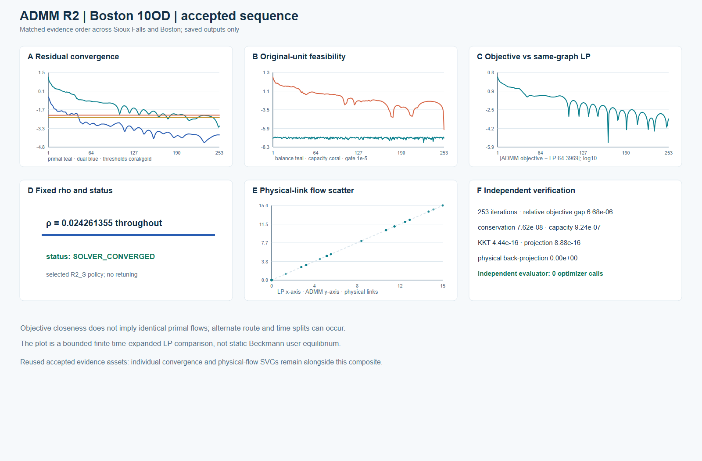
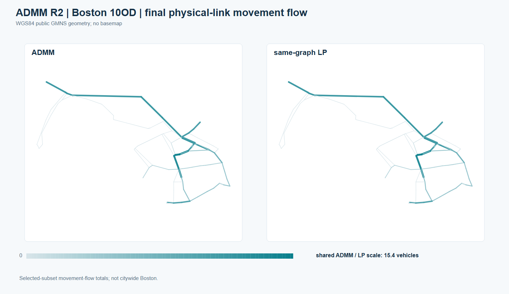
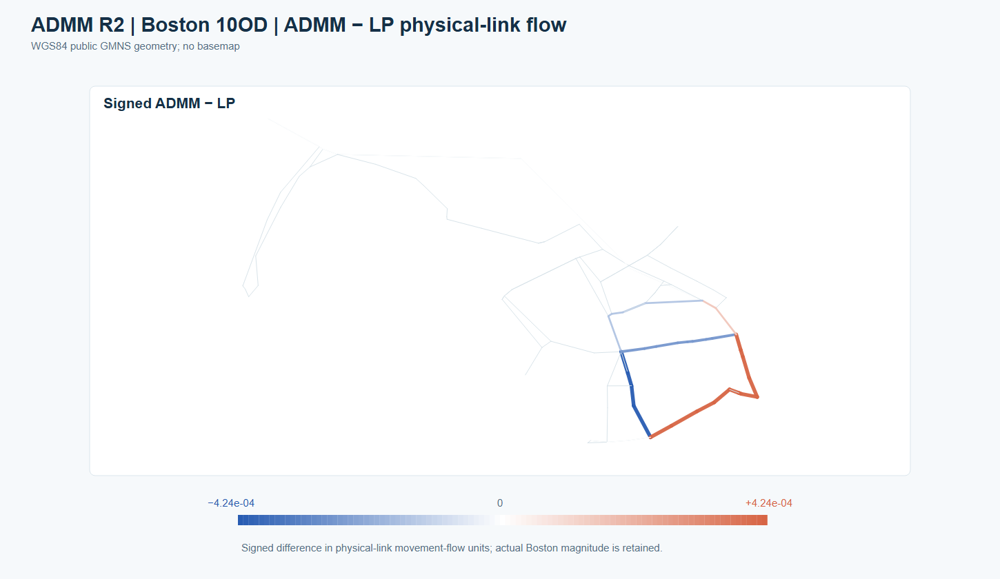
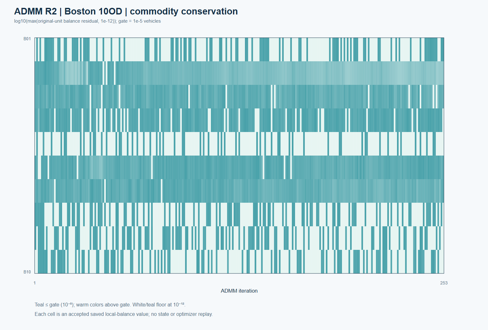

Boston ADMM R2 · frozen-policy 10-OD holdout
The Boston ADMM R2 run used the already-selected, frozen R2_S source, input-derived fixed-rho rule and independent gates. It is one bounded finite time-expanded, fixed-cost, shared-capacity pilot: 10 ODs, 90 physical nodes, 125 directed physical links, 3-second steps and a 100-step horizon. It is not a citywide Boston assignment or static Beckmann UE.
| Accepted saved result | Value |
|---|---|
| ADMM iterations | 253 |
| ADMM objective | 64.39729165541078 |
| Same-graph arc-flow LP objective | 64.3968615115296 |
| Relative objective gap | 6.68e-6 |
| Max original-unit local conservation residual | 7.62e-8 |
| Max capacity excess | 9.24e-7 |
| Max physical back-projection error | 0 |
All declared independent gates passed. The independent evaluator made zero optimizer calls. The policy was frozen after Sioux development, and no Boston retuning or scientific rerun contributed to these figures.

Editable six-panel SVG · original accepted convergence SVG · original accepted physical scatter SVG
{kind=link}
{kind=link}
{kind=link}
Physical-link movement flow and LP comparison
The 125 saved project-generated per-link ADMM/LP comparison rows are joined by physical_link_id to previously public Boston GMNS Plus 21_Boston physical-link geometry and identifiers. The public repository already records source commit 116447ab641cca1ed34797d019c8e704063393c3 and Apache-2.0 terms. The geometry file's SHA-256 is 673405a563e325678f79cbbaa1379d23a0aff2691c0b7f4843715c38170a7a84. No basemap or private dynamic arcs are embedded.


The absolute panels use one shared ADMM/LP scale. The signed map is centered at zero and labels its actual micro-scale maximum (4.24e-4 vehicles); it does not magnify the scientific value. The full permitted 125-row derived ADMM/LP table contains only physical-link ID, two derived flow totals and signed difference. Objective closeness does not imply identical primal route/time splits.
Commodity-level local conservation

The heatmap plots all ten saved commodity-by-iteration balance residuals as log10(max(residual, 1e-12)) and marks the frozen 1e-5 original-unit gate. It is a plot of saved derived evidence, not a state replay.
Rights, provenance and limitations
Rights basis: “User-authorized project-generated derived output, joined only to previously public Boston GMNS geometry and identifiers.” The approved release covers the bounded numerical summary, figures, derived per-link table, captions, hashes and limitations. It does not include private dynamic_arc.csv or dynamic_demand.csv, state.npz, full dynamic-arc/commodity arrays, raw LP reference-flow files, private run logs or handoff archives. Public geometry remains credited to GMNS Plus 21_Boston under Apache-2.0; the project's existing Boston source record and visual provenance record provide the local publication trail.
Each new figure has editable SVG, caption/limitations and a source-hash sidecar. The plotting-only renderer uses accepted saved results and previously public physical geometry. This ADMM result is separate from the bounded Boston CG pilot; a CG full-DAG pricing certificate is not an ADMM certificate or an independent ADMM convergence theorem.